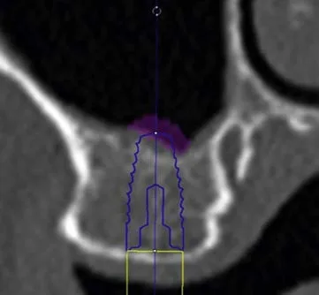
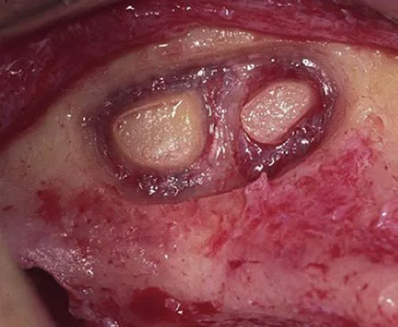

نسخه استخراجشده؛ ترجمه یا تأیید علمی انجام نشده است. وضعیت: captured
سینوس ماگزیلاری یک حفرهی خالی نیست؛ یک سیستم فعال است و کار کردن آن به دو چیز بستگی دارد: ممبران سالم و مسیر تخلیهی باز.
ممبران شنایدرین از اپیتلیوم استوانهای مطبق کاذب مژکدار ساخته شده. هر سلول ۵۰ تا ۲۰۰ مژک دارد و این مژکها به سمت اوستیوم ضربان میزنند تا روزانه حدود یک لیتر موکوس تولیدشده را از سینوس بیرون برانند.
و نکتهی تعیینکننده برای تو: اوستیوم در بخش فوقانی دیوارهی داخلی قرار دارد — یعنی بالاتر از کف سینوس. تخلیه در این سیستم خلاف جهت جاذبه است و کاملاً به کار مژکها وابسته. رابطهی مستقیمی هم میان اندازهی اوستیوم و فشار اکسیژن داخل سینوس وجود دارد.
پیامد جراحیاش را همینجا نگه دار: هر چیزی که اوستیوم را ببندد — تورم، پلیپ، یا مواد گرافت اضافی — تخلیه را متوقف میکند و راه را برای عفونت باز میکند. در ادامهی همین یونیت خواهی دید که پر کردن بیشازحد سینوس یکی از علل شناختهشدهی رینوسینوزیت حاد پس از پیوند است.

دو ساختار، بیشترین دردسر جراحی سینوس را میسازند.
سپتوم آنترال. شایعترین واریاسیون استخوانی سینوس است. حدود ۳۰ درصد ماگزیلاهای دنددار سپتوم دارند و سهچهارم آنها در ناحیهی پرمولر ظاهر میشوند. بررسیهای CBCT توزیع را چنین گزارش کردهاند: ۴۱ درصد ناحیهی میانی، ۳۵ درصد خلفی و ۲۴ درصد قدامی. سپتوم کامل که سینوس را به دو محفظه تقسیم کند نادر است — تنها ۱ تا ۲٫۵ درصد.
چرا مهم است؟ چون سپتوم جراحی پنجرهی جانبی را پیچیده میکند و احتمال پارگی ممبران را بالا میبرد. یعنی سپتوم فقط یک یافتهی تصویری نیست؛ یک هشدار دربارهی طراحی پنجره است.
شریانها. شاخههای شریان ماگزیلاری — بهویژه شریان آلوئولار فوقانی خلفی (PSA) و شریان اینفرااوربیتال — آناستوموزهای داخلاستخوانی و خارجاستخوانی در اطراف سینوس میسازند. همین آناستوموزها هستند که هنگام برداشتن پنجرهی دیوارهی جانبی، خونریزی حین عمل ایجاد میکنند. در دیوارهی داخلی هم شریان نازال خلفی جانبی حضور دارد؛ رفلکشن تهاجمی ممبران میتواند به این عروق آسیب بزند یا به حفرهی بینی نفوذ کند.
